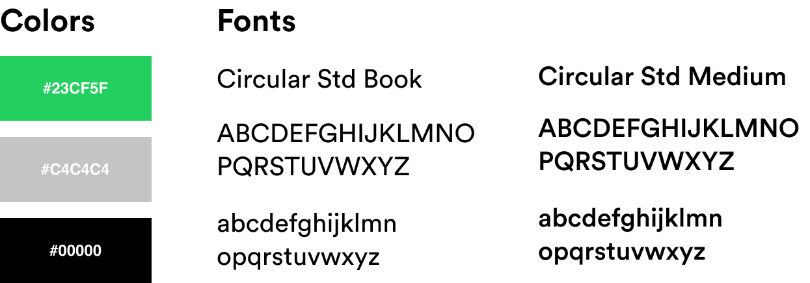

Project Details
My Role:
Lead UI/UX Designer, Branding
Tools:
Sketch, Invision, Photoshop, Illustrator
Duration:
2 weeks
Overview
As an avid Spotify user, I noticed a problem that effected my music listening experience when driving with friends. In most cases, there's passengers arguing for the aux cord, who gets to queue music, and terrible song selection. As the driver, this can be extremely distracting and unsafe.
Research
To learn more about other people’s experience listening to Spotify, I conducted 5 interviews with avid Spotify users ages 18-21. I chose to sample this age group because most college students listen to music through Spotify on a daily basis.
Questions
During the interviews, I asked participants questions regarding their experience using Spotify in group settings. For example, how do you typically listen to music with your friends? Do you make a collaborative playlist? Do you pass one phone to each person? Does one person control everything?
Results
After analyzing my interview notes, I found that most people disliked the music listening experience with their friends because it takes too long to create a listening queue or there's an unequal distribution of music liking due to one person being in charge.
Target Audience / Persona
To encapsulate the people I interviewed, into one person, I created a persona of Samantha Lee. This helped me focus on a target audience that generally fits this description.
Samantha is a 19 year old college student who considers herself to be an avid Spotify user. She typically listens to music with her friends in group settings- whether it's a party or in the car. She is typically the driver of her friend group and has trouble concentrating because her friends argue about who gets to choose the music. Samantha wishes that there was a better solution to improve this listening experience.
Solution
After thinking about the problems from my research, I concluded that the main problem was that only one person's music taste was being played.
To solve this problem, I decided to make a prototype feature I would want introduced into the Spotify mobile application called Rooms. Rooms would allow Spotify users to collaboratively listen to music together with the abilities to add and vote to remove songs in listening parties.
Sketches
Using my research and conceptual idea, I began to draw quick sketches of potential solutions to this problem. I created 2 paths of using Spotify Rooms, one for drivers and another for passengers.

Additionally, I created a user flow of how the prototype would work
Low-Fidelity Concept
Going into Sketch, I created a low-fidelity mockup based on my original sketches and user flow diagram.

High-Fidelity Concept
After finalizing the basic wireframe design of the website I transformed these designs into high-fidelity mock-ups.
How It Works
Once finalizing my high-fidelity wireframes, I imported the frames to Invision and created an interactive prototype. While wiring my prototype, I made sure to have fluid transitions that were identical to that of Spotify's mobile app.
To use Spotify Rooms, there are 4 main components:
Host Menu
To create a new room, the host will press the Rooms tab on the main interface and click the "New Rooms" button. Similar to creating a new playlist, a pop-up will appear where they can name the newly created room. Once created, a 4 digit join code will be created, allowing members to join the room.
Member Lobby
Once the host has created a new room, members must enter the 4 digit generated code to join. They can then add songs to the play queue by clicking the "Add Songs" button where they will be introduced to the same song search menu they're familiar to in the Spotify application.
Add Songs
To add songs to the queue, I decided that I would keep the same functionality to add songs in playlists.
Vote to Remove Songs
By introducing a vote kicking functionality, unwanted songs will be removed with a 2/3 majority vote. This would ensure that only the best songs are being played, making the listening experience great for all passengers.
Branding
While creating Spotify Rooms, I kept in mind the pre-existing design guidelines that Spotify uses. It was important to stay consistent to the real Spotify app to create the sense of realism.
User Feedback
During user testing, I found that 3/3 people between the ages of 18-21 felt that Spotify Rooms would improve collaborative listening in group settings.
However, I did find that some people would want alternative ways of joining a room. As a possibility, I tested a version using QR codes, but most users did not like that you would need to give camera access to the application.
Challenges
Building an entire user interface and experience was challenging for me. Some design challenges I faced include:
- How can I create the easiest way for users to join a Room?
- How can the Rooms feature be safe for drivers?
- How can I reach out and promote my product?
Next Steps + Conclusions
I would like to explore more potential solutions ways of creating the Room lobby or ways of ensuring an evenly distributed number of songs selected between contributors.
Additionally, I'm curious how the project would have been different if I had interviewed Apple Music or Tidal users instead of focussing on creating a Spotify based experience?
Overall, this project was super motivating for me to increase my skills as a designer and to learn more about the UI/UX field. This was my first ever project focusing on the user interface and experience flow of an application. I am very happy with the work that I put in to this project and the solution I came up with to create a new way to share music at group events.
Update
After building this project, I built an advertisement website showcasing and selling the idea. Using this site, I reached out to 300+ Product Designers and Product Managers at Spotify for feedback and to potentially receive an internship the upcoming summer. Working at Spotify has been a dream of mine since 2015 as a sophomore in high school. As weeks passed, I soon received feedback from the Spotify employees I had asked for feedback from.

In October 2019, I drove 2 hours to attend a Spotify internship recruitment panel at the University of California, Berkeley. I had the opportunity to present and demo my project with product managers at the company and pitch my idea and prototype. This was a great learning experience and was a lot of fun getting feedback and learning more about the company.